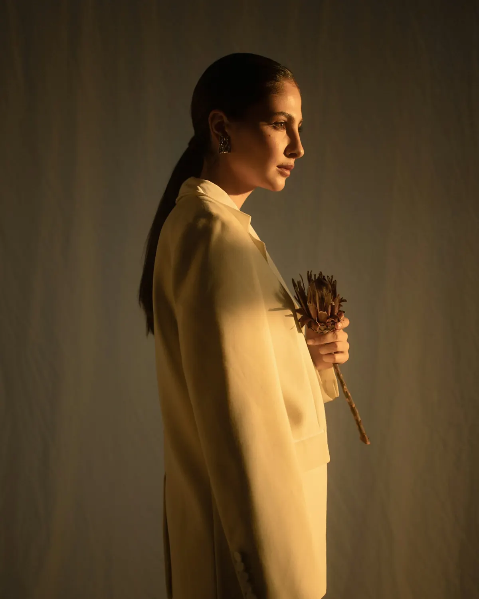

Collezione autunno · Lino e lana rigenerata
Vestiti
fatti per
restare.
Pochi capi, filati tracciabili e cuciture pensate per durare anni, non stagioni.

Lookbook
I capi della stagione
Scorri →
Camicia in lino€ 89
Blazer destrutturato€ 189
Pantalone ampio€ 119
Cappotto in lana€ 259
Maglia leggera€ 79
Lino
Coltivato in Europa, lavato a pietra per una mano morbida fin dal primo giorno.
Lana
Rigenerata da capi a fine vita, filata di nuovo in Italia.
Cuciture
Doppie e rinforzate nei punti di tensione. Riparazioni gratuite per un anno.
Recensioni di esempio · concept dimostrativo
Chi li indossa
★★★★★
“La camicia in lino dopo un anno è ancora perfetta. Si vede la cura nelle cuciture.”
★★★★★
“Taglie precise e reso semplicissimo. Finalmente un brand trasparente sui materiali.”
★★★★★
“Il cappotto in lana rigenerata è caldo e leggero. Lo consiglio.”